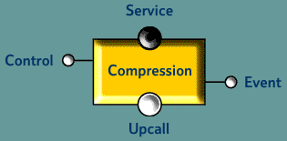

Dynamic transport protocol stacks
A flexible middleware transport subsystem should satisfy a number of requirements:
- Platform independence to hide native networking APIs provided by different host operating systems.
- Independence from higher level protocols (session, application) to allow use with a wide range of application-specific APIs.
- Modularity to separate individual protocol components and allow them to be composed, giving exactly the required functionality.
- Common interfaces so that all components share the same external structure and can be flexibly combined in any order.
- Dynamic composition to allow interaction styles between distributed objects to be defined at runtime.
- Management support to monitor and control the operation of the protocol stack and to allow transport-related events to be generated for external management components.
At the programming level, interaction between components is defined by, for example, IDL specified interface specifications (or metadata in XML as discussed earlier). This gives a functional view of the interactions and defines the information which is to be passed between components. How that information is to be represented and delivered is the concern of the transport protocol stack. This gives a clean separation between the component implementation and how it communicates with other components.
The Java-based framework for dynamic protocol stacks has been designed to meet these requirements [5]. In this framework, a service component can support one or more service endpoints, each of which represents a client's view of the service. It could, for example, be an IDL interface. A service endpoint can simultaneously be exposed over multiple transport protocols which are identified to clients by a reference consisting of a sequence of names and addresses of transport protocol elements. This structure allows a client to identify the protocol stack used by the service component and to construct a compatible one to support its interactions. Data is transferred between communication endpoints through a graph of protocol layers. Each layer implements some protocol functionality, providing data transmission services to higher layers (closer to the application) and can require services from lower layers. Each protocol layer supports similar interfaces to allow flexible composition of layers.

Fig. 6 A protocol layer (in this example, compression) showing the four types of interface (service, upcall, control and event) supported.
Protocol functionality is exposed via the service interface and service requirements are represented by upcall interfaces. Data is passed down the stack through the service interface of a lower layer and passed up the stack through the upcall interface of the higher layer. A protocol layer can provide a control interface through which higher layers can control the operation of the protocol. It can also provide an event interface which can 'listen' for events generated by lower layers in the protocol stack. The four interfaces are shown in figure 6.
A stack is created by instantiating protocol layer objects and binding the requirements of higher layers to services provided by lower layers. For example, the TCP protocol layer requires the services of an underlying IP layer. Requests for control interfaces and registrations for events are passed down the stack during binding. If the layer immediately below cannot meet the request, it is passed down the stack until a layer is found that supports the requested interface or the bottom of the stack is reached. This means that a protocol layer does not need to know the details of the stack below it, and also improves performance by allowing layers to be bypassed.
A protocol configuration need not be linear. All that is required is a directed graph and typically a tree structure is used. This sort of graph requires multiplexing data from a number of higher layers onto a single lower layer. A normal protocol layer can perform this multiplexing.
Using the framework outlined, a great variety of communication styles can be supported and dynamically configured. These protocol layers all modify the messages passing through them and so, for effective communication, compatible layers must appear on each side of a component interaction.
|
|
|||||||||
|
|||||||||
|
|
|||||||||
Fig. 7 Multimedia animation sequence showing the construction of the protocol stack
There is another type of protocol layer, termed a virtual protocol, which does not modify the data flow but can be used for monitoring and can perform management actions. This could include, for example, measuring the network QoS available to an application. As virtual protocols can be inserted into a stack without modifying the messages passing through it, they can be used without affecting other communicating components.
In our work we are developing protocol layers for the support of a wide range of styles including: TCP and UDP, unicast, multicast, broadcast and reliable group communications. Encryption and compression can also be provided.
© Copyright British Telecommunications plc 1999